Disposable previews from a throwaway candidate on an isolated Paseo 0.14.0 (fake op and security). File names read cand-<state>-<width>[-light].png; main-* is today's build, context only.
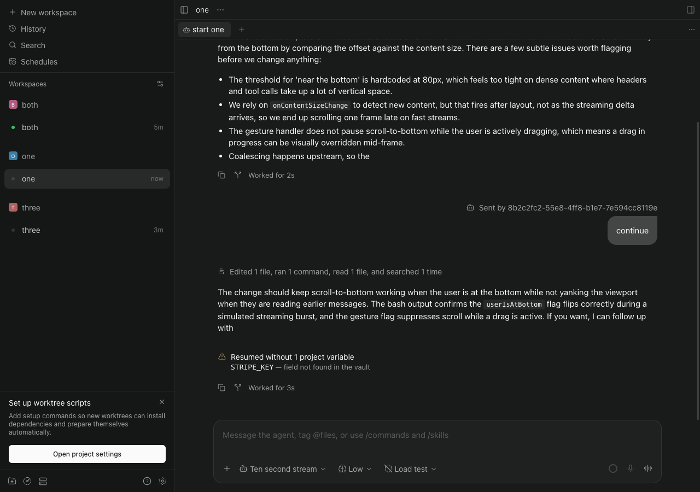
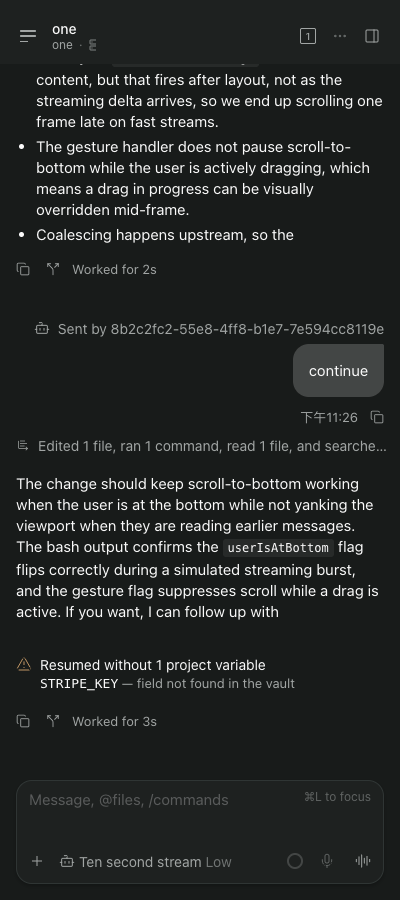
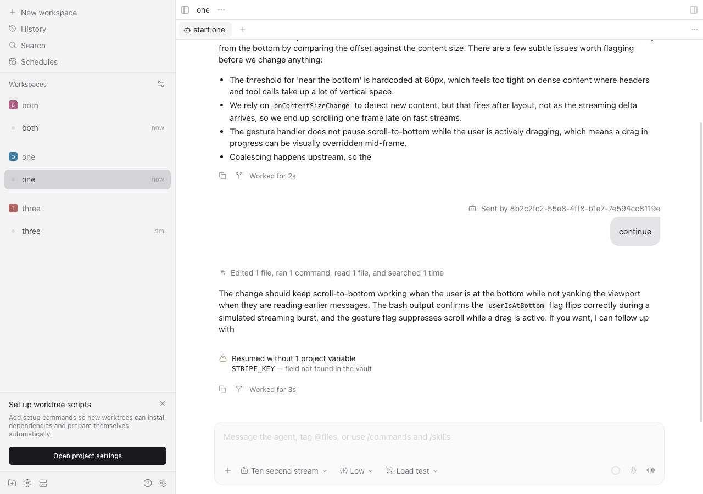
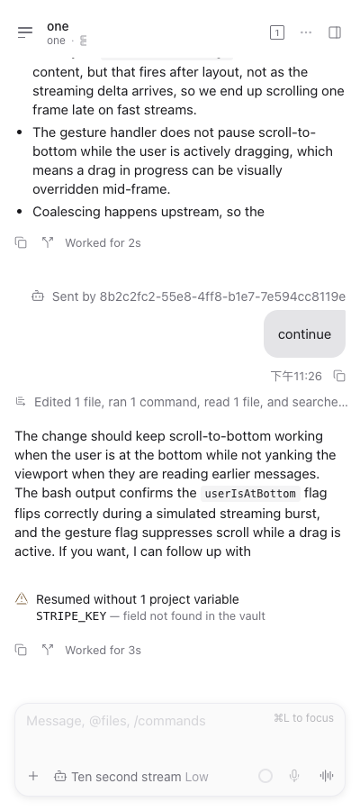
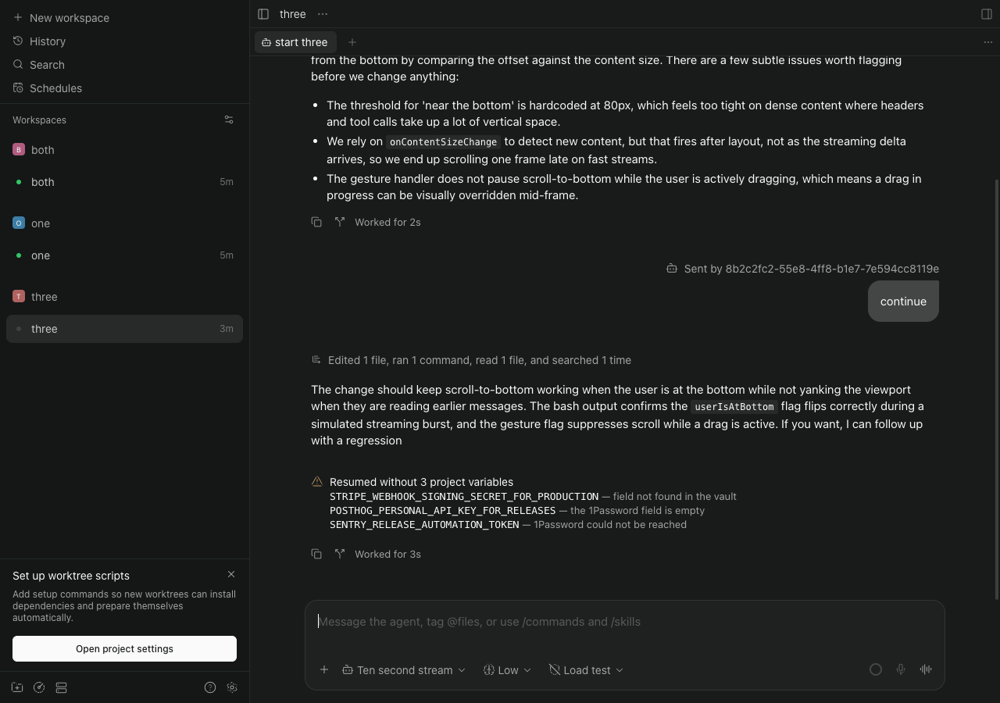
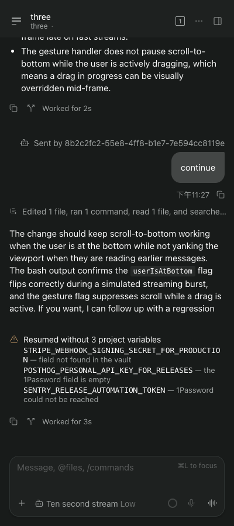
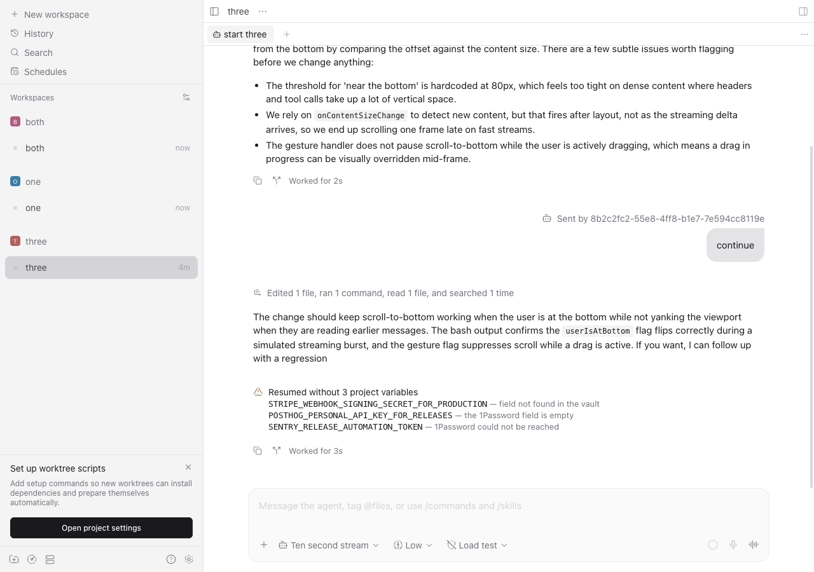
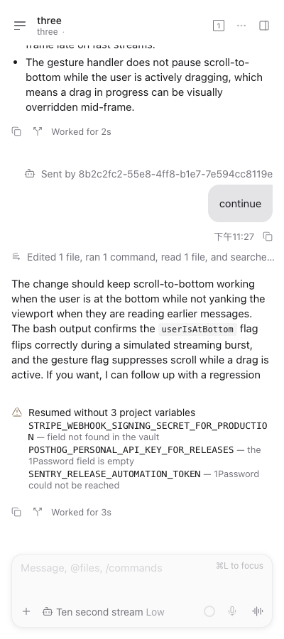
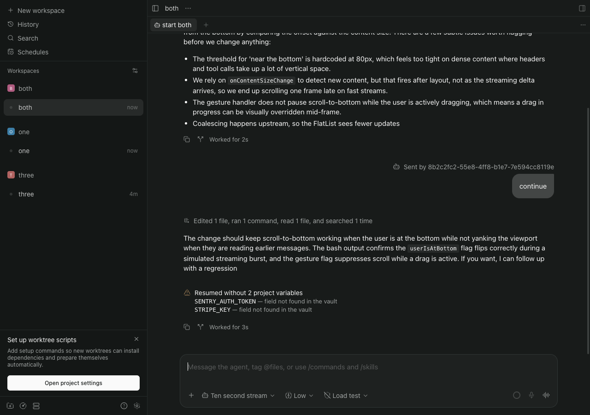
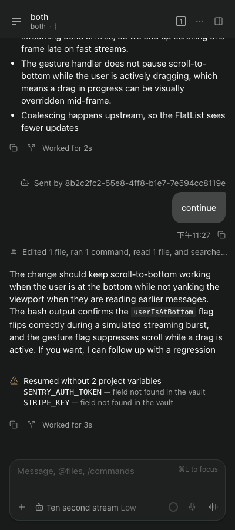
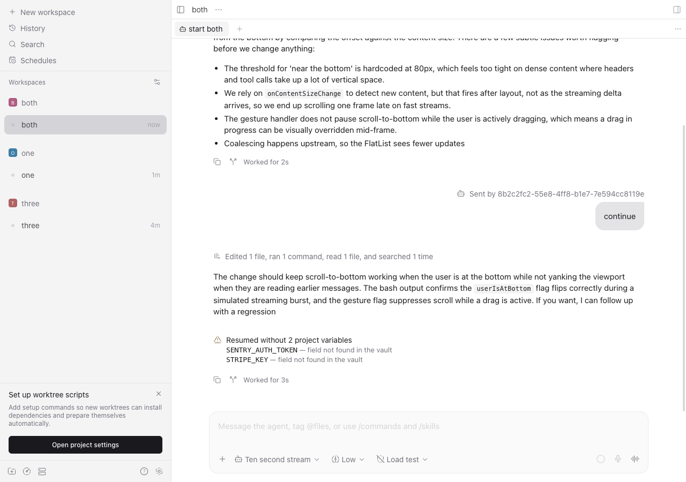
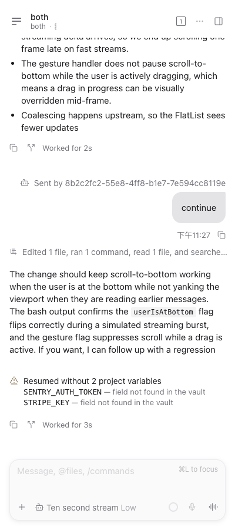
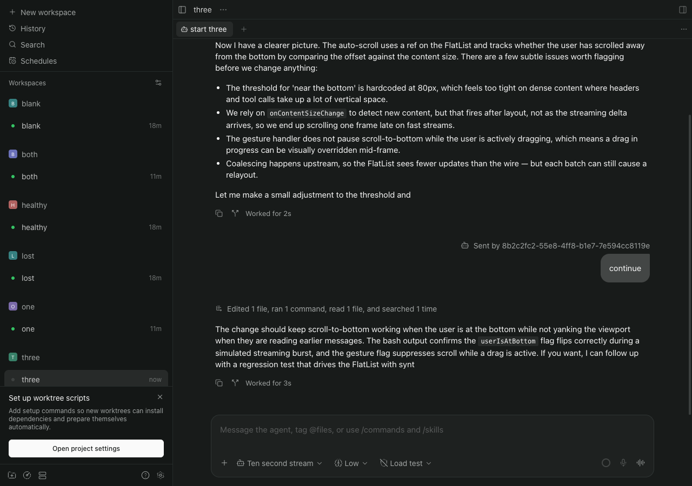
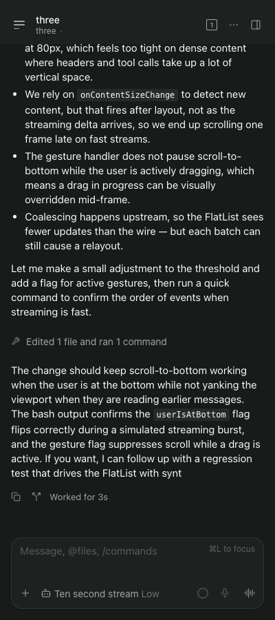
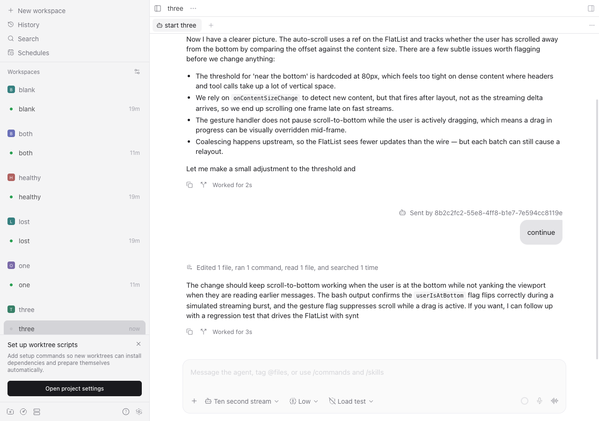
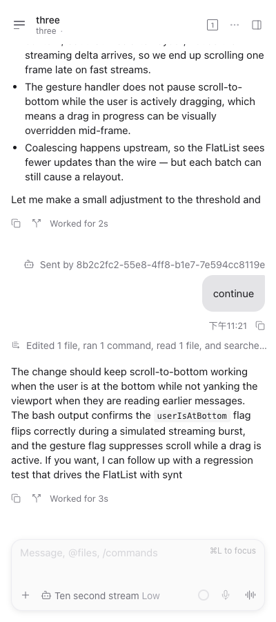